Project Overview
Blending tradition with technology in one wellness app
Our project revolves around developing an all-in-one yoga and wellness app, aligning with our client's goal of making yoga's benefits easily accessible.
We seamlessly blend tradition with technology, offering session bookings, nutrition guidance, preloaded videos, and an integrated e-commerce platform. This app serves as a holistic solution for yoga enthusiasts, catering to users of all levels — from someone rolling out a mat for the first time to a practitioner deepening an established routine.

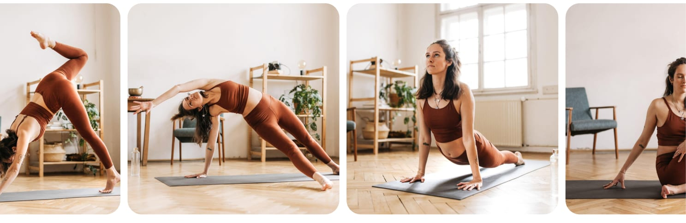
Problem
Wellness was scattered across too many places
Addressing the need for a comprehensive and user-centric yoga app, we aim to create a digital platform that seamlessly combines yoga sessions, diet-based recipes, preloaded videos, and e-commerce — providing a holistic wellness solution for yoga enthusiasts.
What users were up against
These came out of the interviews rather than assumption — they are the pain points our participants described in their own words.
- Not enough time — limited time for lengthy sessions, and difficulty balancing work and wellness.
- No sense of progress — difficulty tracking progress, and a lack of meditation-focused content.
- Practice and nutrition lived apart — limited resources for combining yoga and nutrition, alongside data privacy concerns.
- Hard to start — overwhelmed by complex poses, and a lack of beginner-friendly guidance.
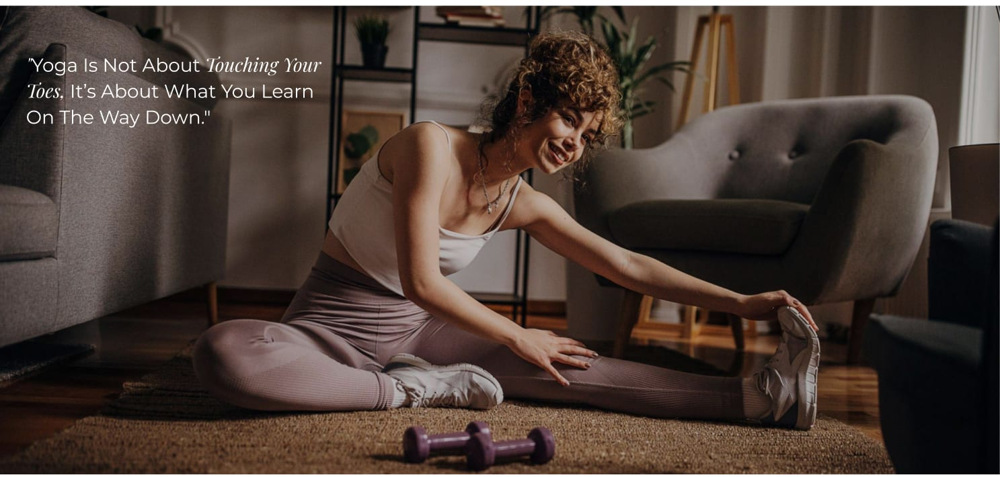
Five goals we set for the product
Holistic Wellness Integration
We are committed to seamlessly integrating diet-based recipes and nutrition advice into the app's core offerings, driven by the belief that physical well-being is an essential component of holistic health.
Diverse Content Library
A library of preloaded video sessions, curated and led by expert instructors — providing a rich and varied yoga experience across different skill levels and interests.
Efficient E-commerce Platform
A user-centric store inside the app offering a thoughtfully selected range of yoga-related products, so users have a convenient and reliable source for their wellness needs.
Flexible Subscription Model
Various subscription options giving exclusive access to premium content, personalised features, and benefits that encourage long-term engagement.
Streamlined Wellness Access
A unified platform that simplifies the wellness journey, empowering people to embrace wellness practices and yoga easily and improving their overall quality of life.
Research
Eight conversations that shaped the product
Our journey starts by getting to know our users — real people with their own motivations, goals, and hurdles in yoga. Through candid interviews and organizing their feedback, we've gathered essential insights.
For qualitative analysis, we engaged in user interviews with eight potential users to understand their motivations and challenges. These are the questions we put to each of them.
- What motivated you to seek out a yoga app like this one?
- Can you describe your typical experience when practicing yoga, including any challenges you face?
- How do you envision an ideal yoga app assisting you in your practice and overall wellness?
- What role does diet and nutrition play in your wellness journey, and how do you incorporate it into your routine?
- How do you prefer to discover and select yoga sessions?
- What features or functionalities would you consider essential in an ideal yoga app, and why?

Key insights
- Users have diverse motivations and goals, from physical fitness to mental well-being, which highlights the need for a flexible and adaptable app.
- Pain points include challenges in session discovery, a desire for personalization, and concerns about data privacy.
- Users value quality over quantity when it comes to content, and are looking for a curated selection of sessions.
- Integrating nutrition guidance with yoga is a unique selling point that appeals to certain users.
- A sense of community and mindfulness features could enhance user engagement and satisfaction.
Affinity & empathy mapping
Our affinity mapping process is a visual journey through user interview data. By grouping similar insights and experiences, we've unveiled key patterns and themes that inform our design decisions.
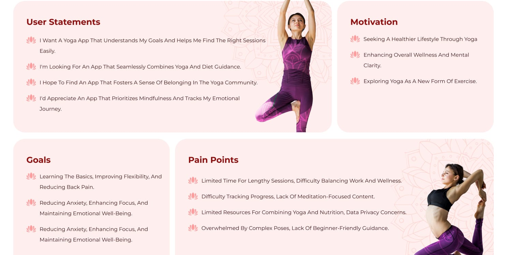
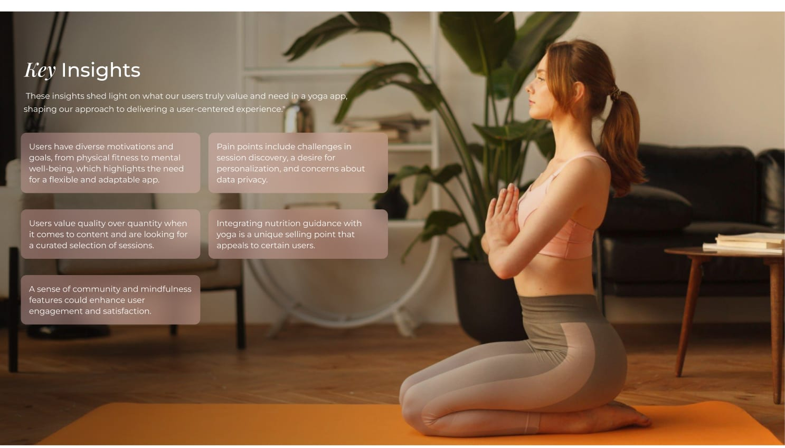
The persona we designed for
“In the whirlwind of city life, yoga is my anchor. It's not just about stretching; it's about finding moments of calm amidst chaos, and I'm on a journey to make it a consistent part of my daily life.”
Personality
A driven marketing manager from San Francisco. Emily's fast-paced career constantly keeps her on her toes, leaving her yearning for moments of serenity and rejuvenation. Her journey into yoga reflects her pursuit of inner balance amidst the hustle and bustle of city life.
Frustration
Emily's primary frustration stems from the difficulty of finding quality yoga sessions that align with her busy lifestyle. Her packed work schedule leaves little room for in-person classes, and she has struggled to locate a yoga app that offers customized sessions tailored to her specific needs.
Goals
Integrate yoga into her daily routine for effective stress management. Achieve a harmonious work-life balance and rediscover inner tranquility. Enhance her flexibility and posture, both of which often suffer due to extended hours at her desk.
Motivation
Emily is motivated by her strong desire to attain mental clarity and a sense of inner peace. Her demanding job requires her to think on her feet and be creative, which often leaves her feeling mentally drained. She believes yoga can be the refuge she seeks.
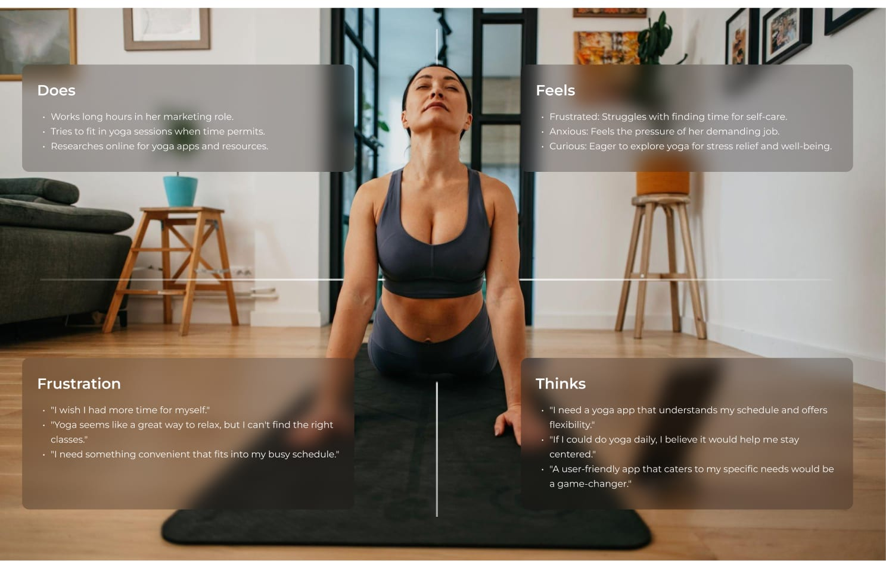
Process
Six stages, discovery through delivery
Explore our meticulous design process, from wireframing to prototyping, as we shape the app's user interface to ensure a seamless and intuitive experience for all users, fostering engagement and satisfaction.
- 01
Discovery Session
- 02
Idea Validation
- 03
UX Research
- 04
UI Design
- 05
Prototyping
- 06
Deliver
Where the 80 hours went
While designing the app we have passed different steps from research to creating final design that make user feel reliable to test and define the final version.
Information Architecture
One map across five product areas
We delve into the core structure of our yoga app — how we've carefully designed the information architecture to ensure that users can effortlessly navigate the app, discover content, and achieve their wellness goals with ease.
Everything sits behind a single authentication step, then branches into five peers rather than burying four of them inside a menu:
Mindfulness
Categories → series → videos.
Yoga
On-demand videos, workshops and live classes, through to booking a session.
Home
Activity trackers, courses, mood tracker, learning and premium plans.
Shop
Offers, categories and best sellers → product details → cart or buy now → payment.
Recipes
Categories → recipe list → recipe details.
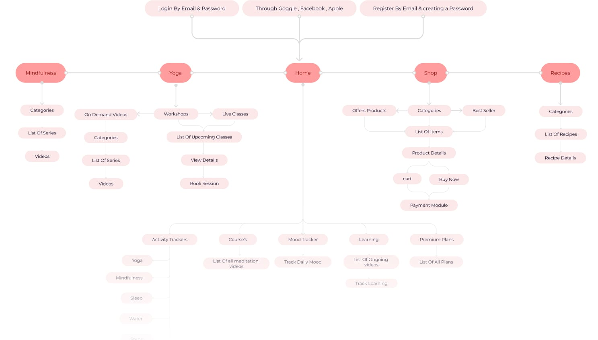
Wireframing
We unveil the blueprint of our app's visual interface — where we've sketched out the app's layout and functionality, ensuring a clear and user-friendly design that aligns with our user-centered approach.
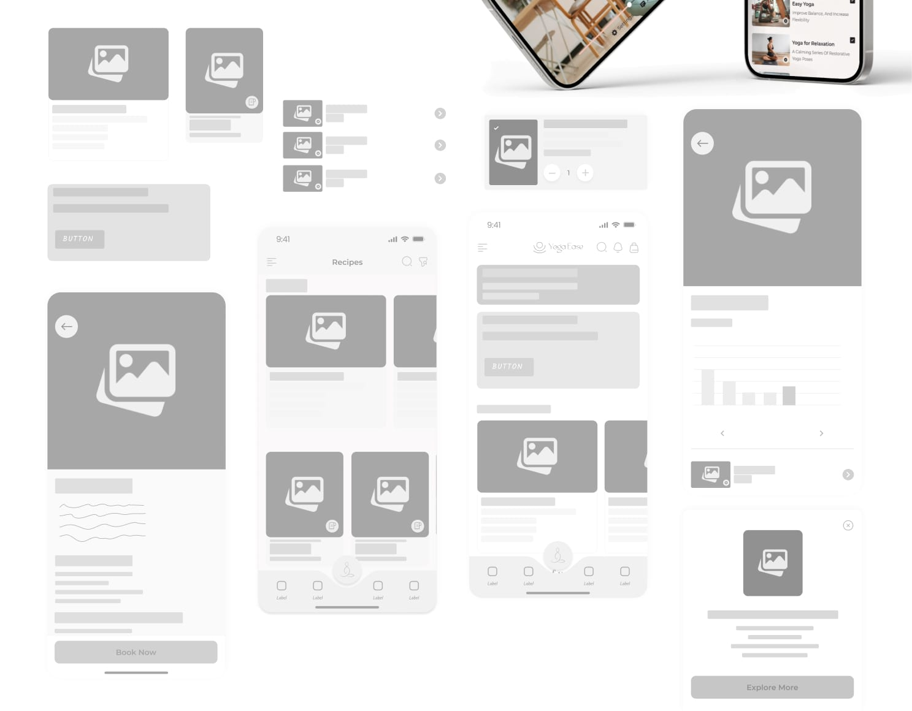
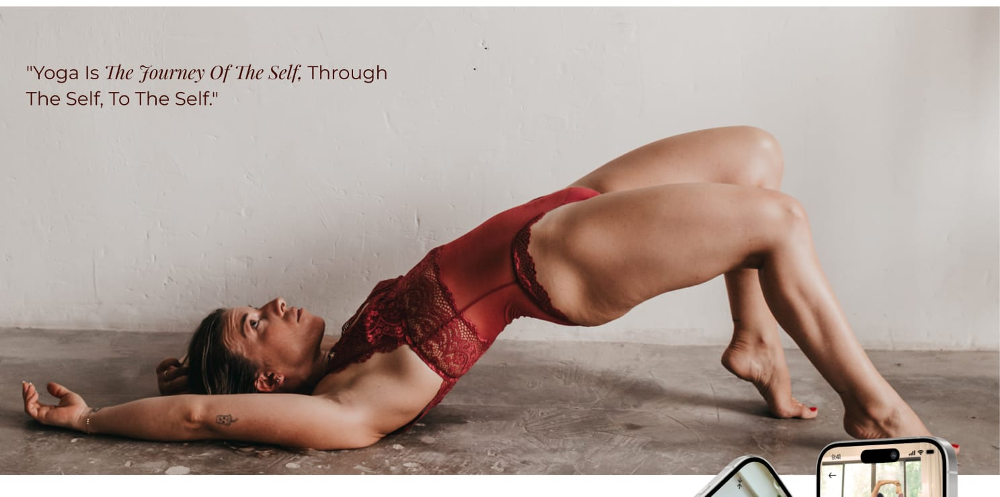
Design System
A calm, consistent visual language
Explore the foundation of our app's visual identity — the creation of a design system that encompasses our color palette, fonts, icons, and more. These cohesive design elements are instrumental in delivering a consistent and aesthetically pleasing user experience.
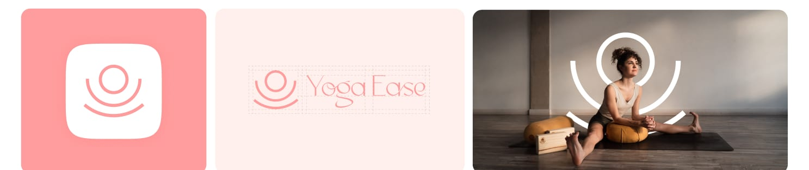
Colour
Typography
For our design system, we've carefully chosen fonts that embody the essence of our yoga app. Playfair Display, with its elegant and sophisticated style, lends an aesthetic touch that aligns with the serenity of yoga. In contrast, Montserrat, known for its modern simplicity, ensures readability and clarity in descriptions and various app elements.
Playfair Display
Display & headings
AaBbCcDd
123!&*
Used for screen titles, section headings and editorial moments.
Montserrat
Body & interface
AaBbCcDd
123!&*
Regular · Medium · Semibold — 12 / 14 / 16 / 20 / 24 px.
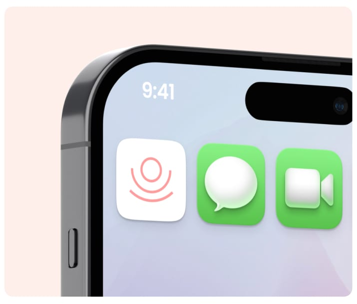
Final Screens
Bringing it all together
The culmination of our design efforts — the final screens of our yoga app. A user-centric approach, intuitive information architecture, and a carefully curated design system come together to create a visually pleasing, user-friendly, holistic wellness experience.

Onboarding
The first steps of our user journey. Designed with clarity and purpose, these screens serve as a welcoming introduction to the app, ensuring users feel guided and empowered right from the start — through Yoga On Demand, Live Workshops and the Online Store, then into sign-up, email verification and log in.
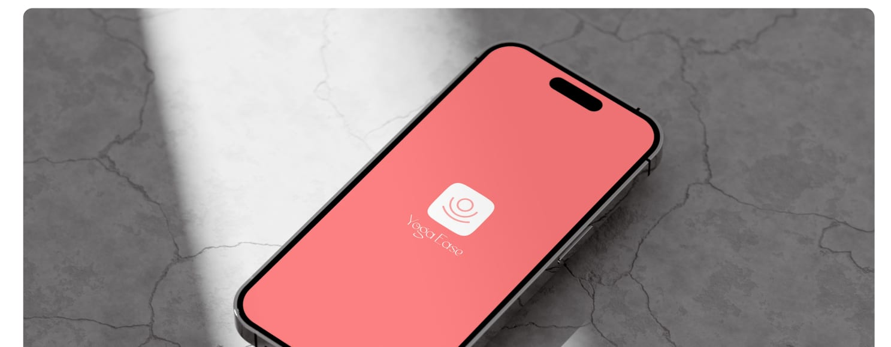

Home
This central space is designed to be your daily sanctuary for holistic well-being. Here's what you'll find at a glance.
- Mood Tracker — tune in to your emotional well-being. Log your daily mood to foster self-awareness and understand the connection between your emotions and your wellness routine.
- Weekly Activities and Workshops — stay connected with the pulse of the yoga community. Discover the latest activities and workshops happening this week, tailored to enrich your practice.
- Wellness Dashboard — track key wellness indicators seamlessly: water intake, sleep patterns, daily steps and meditation hours.

Mindfulness
A sanctuary for yogis of all levels. Dive into a curated collection of pre-recorded videos, spanning from beginner essentials to advanced flows, providing a diverse and personalized yoga experience.
Explore transformative Yoga Series designed to guide you through progressive levels, making your wellness journey seamless and enriching. This isn't just a library; it's your personalized gateway to tranquility and growth, tailoring recommendations to suit your evolving practice.
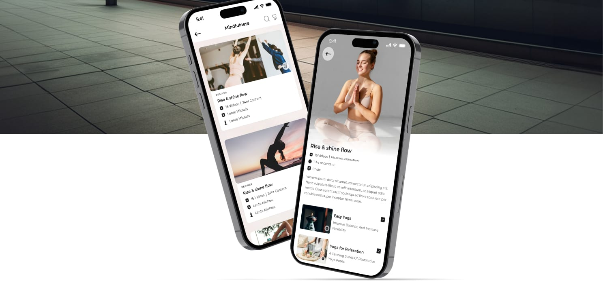
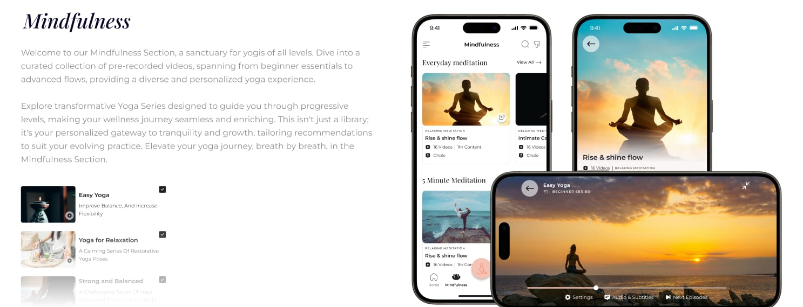
Recipes
Wholesome recipes for every meal, from sunrise to sunset — each with its benefits and full ingredient list, so nutrition guidance sits inside the same app as the practice rather than somewhere else.
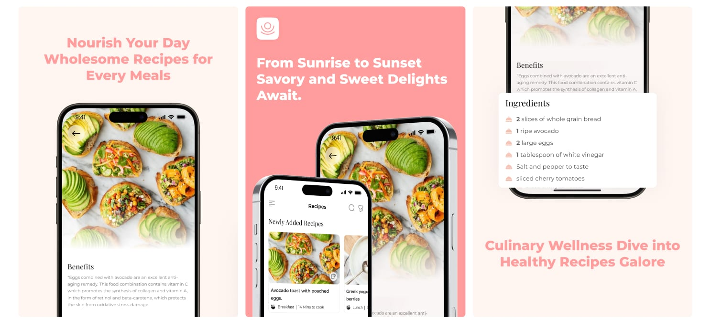
Shop
Your go-to destination for a seamless and enriching shopping experience.
- Curated Yoga Essentials — a selection of yoga mats, blocks, apparel and accessories, each handpicked to enhance comfort and style.
- Hassle-Free Purchases — an intuitive interface that streamlines the process from browsing to checkout.
- Exclusive Deals and Offers — quality products at affordable prices, for seasoned yogis and beginners alike.
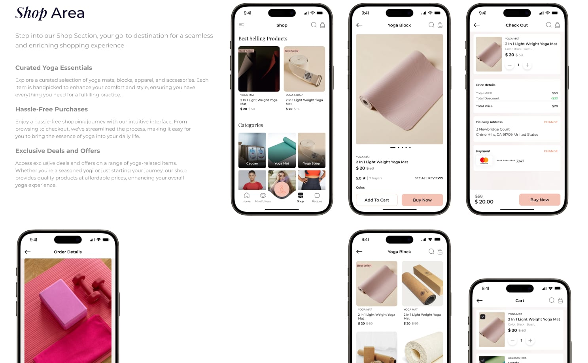
The wider set
Forty-plus screens in total, covering premium plans, step and sleep tracking, workshop booking, learning progress, password recovery and order history.
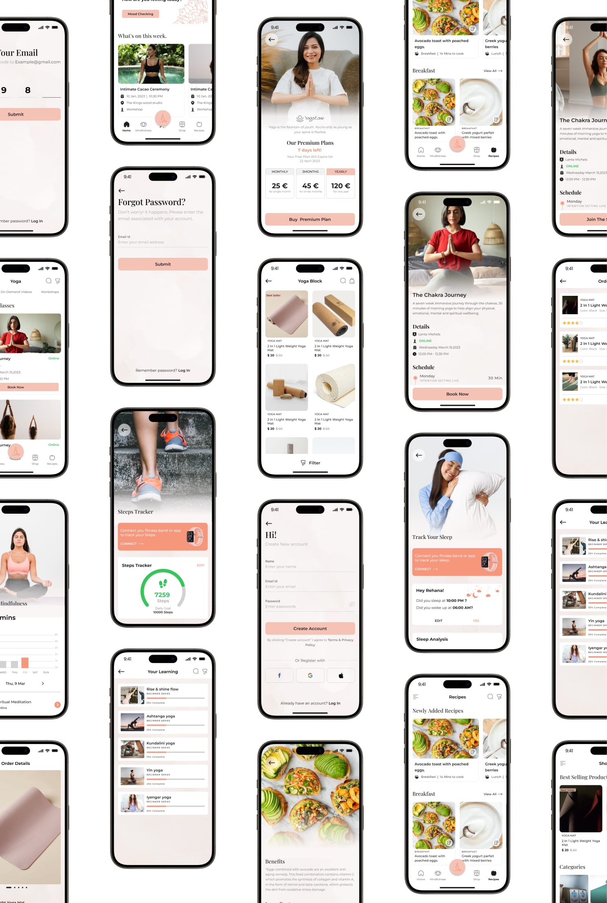
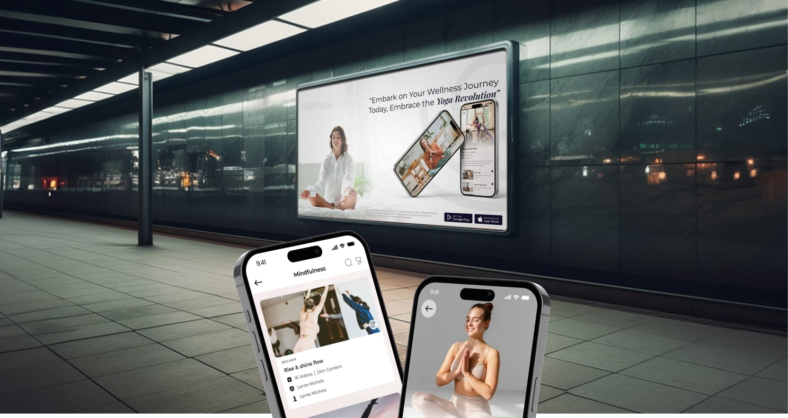
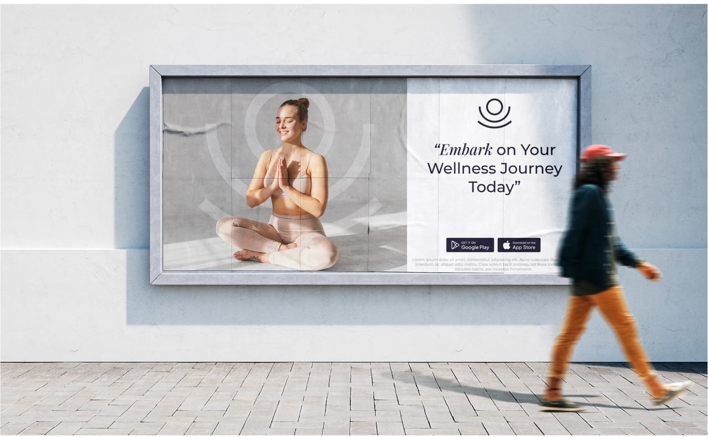
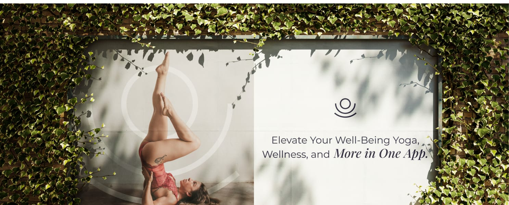
Outcome
Five products, one wellness routine
What began as five things a person had to juggle — a class timetable, a video library, a meditation app, a recipe folder and a shopping tab — ended as one flow with a single account behind it.
The design answers each pain point the research surfaced. Not enough time is met with five-minute meditations and on-demand sessions alongside the live timetable. No sense of progress is met with a tracker set covering yoga, mindfulness, sleep, mood, water and steps, plus a learning list that remembers where a series was left. Practice and nutrition living apart is met by putting recipes in the tab bar, not in a submenu. Hard to start is met with a beginner series and a graded content library.
This was a design project delivered to handoff, so the honest measure here is the shipped system rather than adoption figures — no post-launch analytics or usability scores were collected, and none are claimed.
Crafting wellness together
In the collaborative spirit of this project, a dynamic duo led the way. As an Associate UI/UX Designer I worked under the guidance of an experienced Team Lead. Together we blended creativity and expertise to bring the vision of the app to life.
Rakhi Das — Associate UI/UX Designer
Thank you for reading.
Interested in the thinking behind this project? I'd be glad to walk through it.